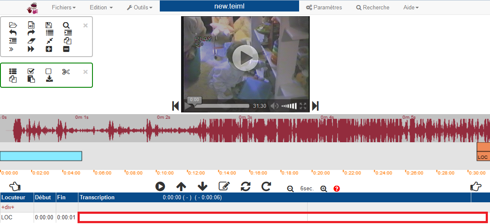
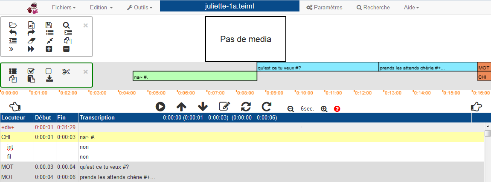

T R J S 0.7.5 - Documentation : First steps
T R J S 0.7.5 - Documentation : First steps
Install TRJS
Conditions for installation
- Mac OS :
- minimum version 10.9 (Mavericks)
- and more recent ones
- for older version, install version 0.4.9
- Windows :
- Seven
- 8
- 10
- Other systems :
- Linux: Installation is done with the sources.
Installation programs can be downloaded here Téléchargement.
Under Windows
- Click on download link.
Select the appropriate Windows version.
You can download this file. - In the download directory, and you will find a file named trjs-....exe
according to the version downloaded.
You have to open it to start the installation.
On Windows 10, a red window appears that warns against the use of dangerous programs. You have to select in the bottom right the message "More information" to obtain a screen where you can confirm that you want to use the installation program.
The following window appears: We suggest to keep selected the Desktop Shortcuts
so that it will be possible to start TRJS from the Desktop using a shortcut.
We suggest to keep selected the Desktop Shortcuts
so that it will be possible to start TRJS from the Desktop using a shortcut.
 The default directory is trjs in "Program Files ..."
The default directory is trjs in "Program Files ..."
You can choose any other location. - The installation of TRJS is finished.
You can close the installation program.

Under MacOS
The download is a zipped file. If you click on this file, it will be
automatically unzipped. The result is an app file (TRJS.app), that you can move
into any other location, including the Applications folder.
For the first use of the software, use control+right click to start the program,
instead of right click. This will allow you to confirm that the software is secure
and can be used on your computer.
Other systems
For Linux systems, it is necessary to install starting from the sources.
Installation from the sources requires the previous installation of Node.js, NPM, Java, FFMPEG and FFPASTE.
Node.js and NPM are necessary to get the sources and compile the program.
The other libraries are necessary for file import/export and for wave visualisation and media conversion.
Some system libraries have to be added, if not present already:
sudo apt-get install libxext-dev libxtst-dev libxkbfile-dev
All this can be done with the following commands:
sudo apt-get update
sudo apt-get install openjdk-8-jre # if java is not installed (version 8 minimum)
curl -sL https://deb.nodesource.com/setup_12.x | sudo -E bash -
sudo apt-get install nodejs # the default version of nodejs is not sufficient
sudo apt-get install libxext-dev libxtst-dev libxkbfile-dev
sudo apt-get install ffmpeg
Sources are available here: http://www.github.com/christopheparisse/trjs/ or download the file called "trjs-version-NUMBER.zip". (NUMBER is the version name, for example, 0.7.4). Or use git clone.
git clone http://www.github.com/christopheparisse/trjs.git
Once the downloaded files are unzipped or after using git clone with github, please do:
npm install
npm run gulp
npm run electron
To run the software once install, it is only necessary to use:
npm run electron
Starting the command sh buildlinux.sh
will create a folder named release which contains a folder nammed Trjs-linux-x64
.
This folder can be move and renammed. It contains the executable file and all parameters.
It is only necessary to start the "Trjs" file in this folder to start TRJS.
If Trjs-linux-x64 is moved, the source folder can be removed.
Or it can be kept for updating the software. To do this, change git clone
for git pull origin and repeat the whole process.
Main features of TRJS
Start TRJS
Please double-click on the icon of the program.
It is possible to associate a file extension to the software so it can be started from the finder with specific file types. Possible files types are .trjs, .xml, and any file type that can be automatically converted by TRJS (chat files, text files, elan files, praat files, transcriber files, subtitle files). The use of .trjs is suggested so that it does not create confusion with other file types.
Layout of the TRJS window
Once TRJS is started, it opens the main window.
This window contains several main parts, which are divided into:
- The menu bar (top of the screen for the Max, with access to parameters and functionalities.
- The media field, surrounded by optional toolbars for editing the transcription.
- The signal, sound representation of the media.
- The partition, horizontal representation of the transcription.
- The media commands, playing buttons and time code setting.
- The transcription, where it is possible to edit the text.
- Set of toolboxes for quick access.
The menubar
The menubar contains several submenus, each with a list of functions:
The
file menu
which contains several options to open, save, import and export the file.
The
edition menu
which contains the main function for editing a line of text, using macros, for copy and paste, for switching
to line mode editing, and using voice recognition (for MacOS) to insert text with your voice.
The
tools menu
which provide access to serch and replace functions, to tier and metadata edition,
to macro edition, to parameters selection, to transcription checking,
to time links modification on the whole file, to media conversion.
The
view menu
allow to go to full screen mode, to zoom out or to zoom in,
to display or not the toolboxes.
The
help menu
contains various informations about using the software,
but also accès to keyboard actions and modification and to display the information messages.
Media part
The media field contains video and/or audio.

The reading bar is specific to the media (video or audio),
it appears when the cursor is above the video and disappears after three seconds when playing the
video.
There are the following options:
- Go backwards (3 seconds by default : can be changed in the menu PARAMETRES ) ou keyboard shorcut: Alt ←
- Playing media/pause
- Horizontal displacement bar in the media, with position indicator in hh:mm:ss
- Display of exact media time
- Volume (mute option)
- Full screen or keyboard shorcut: ESC to go back to normal view
- Go forwards or keyboard shortcut: Alt →
The video field can be resized with keyboard shortcuts: Alt+F2 makes it smaller, Alt+F3 makes it larger
Wave
The intensity wave is a visual representation of the sound according to time and intensity.

Music score
The music score is an horizontal representation of the (vertical) transcription (the text) which provide a clear visual representation of the overlaps between two or more speakers. The screen correspond to a music score page. The extend of the page can be adjusted by the music score zoom commands.

Media commands
The buttons presented around the media field (audio or video) are also associated with keyboard shorcuts.
When the cursor is moved above an icon, a small information text appears and describes the function of the command, and also indicates the corresponding shortcut.
| Icon | Keyboard shortcut | Function |
|---|---|---|
| Play/Pause: playing the media (starting from where the media is stopped or
where the cursor is in the text) /!\ This function does not move the position within the text. |
||
| Set start: insertion of the current time at the start of the current transcription line (where the insertion point is in the transcript) | ||
 |
Set end: insertion of the current time at the end of the current transcription line (where the insertion point is in the transcript) | |
 |
Insert: insert a new empty line for a new speaker in the transcription (below the secondary lines) | |
 |
Repeat: plays the current line (where the insertion point is in the transcription) | |
 |
Go continuous: plays the text continuously, jumping from one line to another (starting from where the insertion point is in the transcription) | |
 |
Backward: goes backwards (one music score page) | |
 |
Forward: goes forwards | |
| Music score zoom: These commands make the contents in the music score larger or smaller. This changes the amount of time represented in one music score (horizontal) page. |
Transcription
Toolbars

The tool bars provide easy access to the main function of TRJS.
Each icon is also associated to a keyboard shortcut, which is displayed as a
tooltip when the cursor hover above the icon.
Open a transcription and a media
Open a transcription
Create a new transcription
In the menu FILES, select New transcript.
A window will open to ask you to choose the media associated with your transcription. You can choose a media or cancel to work without media. Then you can begin the transcription.
The transcription can now be edited in the bottom part of the window as indicated here.

Open an existing transcription
In the menu FILES, select Open a transcript.
If the transcription is associated with a media file, the media file will be loaded automatically. The media file does not have to be in the same location as the transcription. If the transcription does not have any media file, as shown here.

Or if you want to change the media.
Follow the instructions below "Read a media".
Read a media
Load a media
In the menu FILES, select Choose a media.
If there is problem with the media, then it is loaded and visible.
In case of problem, for example compatibility format, it can be necessary
to convert the media.
Using the media
Several functions and keyboard shortcuts are avalaible, each with its functionnalities and specificities:
| Icon or keyboard shortcut | Fonctionnality | Description |
|---|---|---|
| TAB | Playing or pausing the media. | Playing starts from the current point or starts from the beginning of the current line if the media is out of the bounds of the current line. Playing remains around the transcription. |
| Shift + TAB | Playing or pausing the media from the start of the line. Similar as F7, but does not stop at the end. | |
| Alt + TAB | Playing or pausing the media. | Plays the media from where it is stopped, independantly from the transcription |
| F7 | Reads the current line from start to end | read one line only |
| Alt F7 | Reads three lines around the current line | plays the context of the current line |
| F8 | Continuous reading, following the transcription | Playing starts from the current point or starts from the beginning of the current line if the media is out of the bounds of the current line |
| Escape | Pause | Stops playing the media |
Editing the transcription
Structure of the transcription
The transcription is presented in a vertical succession of horizontal blocs as in a text. Each horizontal bloc corresponds to the description of speech and actions by one speaker. Each bloc is made of four parts:
- The name of the speakers (this can be presented either by their code or role, or by the name)
- The starting time of the bloc (optional: can be empty)
- The ending time of the bloc (optional: can be empty)
- A clic with the mouse on the time makes it possible to edit them in seconds and milliseconds.
- The number of digits on the left side of the number can be set from 0 to 3 in the parameter section
- The transcription content
The blocs can correspond to main lines. These are the topmost lines in the organisation
of a transcription. Most often, these lines contains the orthographic transcription of
what was say. This is not always true and possible, for example when coding a language without written
form such as an signed language or a language of oral tradition. For these cases, any type of information
can be used such as API or any type of Unicode font.
The vertical navigation bar is located at the right of the transcription.

- The shades of grey on the lines corresponds to speakers. The are three levels of grey. The dark grey is for the most frequent speaker. The middle grey is for the second most frequent speaker. The light grey s for the other speakers.
- The selected line is in yellow and underlined in blue when in edition mode. Dependant lines are in light yellow.
Putting the cursor on a line will select the corresponding part in the music score.
Conversly, selecting the music score will select the corresponding line.
Selecting a line or the music score will select the corresponding wave position.
However, selecting the wave position does not changed the position of the music score or the transcription.
Fast transcribing and fast linking edition
Put the cursor on a locutor line. If this line does not containt any starting time mark,
use the media to choose the desired starting time and then hit F4, this will set the starting time.You can
also edit directly the starting time in the first column after the speaker name.
From this time on, the TAB kay will start or stop the sound or the video. The keys ALT+left arrow and
ALT+right arrow make it possible to move forward or backward the media. The transcription can be written
in real time, at the same time the media is played or not. When a transcription line is finished, hit
the RETURN key when the media will play the end of the line (or after stoping the media at that exact time). The
end time will be marked on the second time column, the cursor will go to the next line and the start time of the next
line will be marked with the same time as the end of the previous line. The process can then be repeated
as long as necessary.
If the cursor is a the end of the file, new lines will be added to the file.
If not, the existing lines will be modified and rewritted. This make it possible to adjust an incorrect
temporal alignement or to align lines without time marker (for example imported lines).
Other transcription mode
In some cases, for example if there are some overlaps between speakers, or some silences between a turn and
the next ones, or if you want to adjust finely the time setting, there are other linking modes.
To insert new lines in the middle of the transcription hit F6 as much as necessary to insert blank lines
in advance. Or you can hit CTRL+M instead of the RETURN key. This will perform the same operation as the
RETURN key but with inserting a new line.
To set the beginning, it is possible to set the desired time using the media or the wave, and using F4 will set the choosen time at
the beginning of the current line.
F5 can do the same for the end time. To set the end time, it is possible to set the desired time using the media
or the wave, and using F5 will set the choosen time at
the end of the current line.
A selection on the wave file can be used to set the start and end time at once: makes a selection on the wave
and do shift+left click on the selection. This will set the start
and end time to the current line.
Edition of speaker information
A right clic on the speaker (left column in the transcription field), makes it possible to choose the speaker or the name of tier for the current line.
Once the right clic selected, a window appears:
- On the left, possible values for Participant (speaker) -in this example, the choices are: CHI, MOT, OBS.
- On the right, the values of the Structure (Secondary line and Template)
- It is possible to open a text subdivision (+div+), or to close it (-div-).
- It is possible to code and an incident (+incident+) or a pause (+pause+)
- Cancel close the small window.
The values that can be inserted are defined in the speakers and tiers editing section.
See Edition of speakers and tiers to add or modify these values.
You can directly edit the speaker column. If the code choosen is not predefined, the
software will ask about editing the speaker metadata. The "---" value
can be used as an undefined value but this value is not legal unless defined as such
in the metadata.
It is also possible to change the speaker or the tier quickly using a keyboard shortcut.
| Keyboard shorcut | Corresponding code for the speaker or tier |
|---|---|
| Ctrl + 1 | First speaker (see order xxx) |
| Ctrl + 2 | Second speaker |
| ... | ... |
| Ctrl + 9 | Ninth speaker |
| Coding the secondary tiers | |
| Ctrl + Alt + 1 | First property of secondary tiers (see order xxx) |
| Ctrl + Alt + 2 | Second proprerty |
| ... | ... |
| Ctrl + Alt + 9 | Ninth proprerty |
Editing the linking values (start and end time)
Most of the time, the linking values are set automatically using the RETURN key or the F4 and F5 keys (see xxx).
However, it is also possible to edit the number directly in the transcription by clicking
on the value to edit.
Also, all values are stored in millisecond precision. If the decimal values are not all visible, clicking
on the value makes them visible.
The display format of the time references can be changed in the PARAMETRES (menu Tools -> Parameters):
- hms - segmentation delimited with three letters (hour, minute, second)
- 00:00 - display only minutes and seconds
- h:00:00 - display hour, minute and seconds
- 00:00:00 - default display
The number of digits to display for the millisecondes can be adjusted (de 0 à 3). By defaut, no millisecondes are displayed.
Saving the transcription (formats and conversions)
Save is available at every moment:
- With the keyboard shortcut Ctrl + S
- With the icon in the toolbar
- Using the menu FILES and Save.
Saving with another name or in another location is possible by using the menu FILES and Save as.... In the saveas window, it is possible to choose to save in another format by choosing a format in the bottom part of the saving window. Possible formats are Trjs files, XMl files (same format as Trjs), Chat files, Praat files, Elan files and Transcriber files. Trjs/XML is a TEI format.
Export options are available in the menu FILES and Export.
It is possible to export the whole file or part of the file as video media (see here xxx).
It is possible to export only a part of the file, using the global selection (see here xxx).
Command for transcribing
Using the transcription and editing commands
The keyboard key Enter/Return has a special behavior:
- It sets the time of the media to the end of the current line and go to the next line. Also, the starting time of the next line becomes the same as the end time of the previous line. So this makes it easy to create two consecutive lines.
- If the software is at the end of the file, instead of going to the next line, it creates a new line and go to this line.
This makes it possible to realign already transcibed lines. It is also possible to align a file that was imported from a text format, and thus not linked. It jumps over any secondary lines so that only the main lines are linked.
Some keyboard shorcuts can be used to edit or link the transcription:
| Keyboard shortcut | Edition commands |
|---|---|
| Return (Enter) | Sets the time of the media to the end of the current line and to the starting time of the next line and go to the next line (jump over any secondary lines). Insert lines at the end of the file. |
| F4 | Sets the time of the media to the beginning of the current line |
| F5 | Sets the time of the media to the end of the current line |
| F6 | Insertion of a new line without temporal or speaker information (jump over any secondary lines) |
| Alt + F6 | Insert any empty line begining at the current time and with the current locutor information |
| Ctrl + I | Insert any empty line |
| Ctrl + M | Insert any empty line begining at the current time and with the current locutor information (jump over any secondary lines) |
| Ctrl + Alt + M | Sets the time of the media to the end of the current line and to the starting time of the next line and go to the next line |
| Ctrl + T | Open a window on top of application window that makes it possible to go a specific line or to a specific time. |
Undo and redo
Undo the last command
The undo command cancels the last line editing, time setting, line creation, deleting, etc. It call be called through the menu EDIT and Undo or directly with the shortcut Ctrl Z.
History of the last actions
Opening th menu EDIT and Undo list, provides access to list of last actions which can be undone.
Redo the last command
The redo command cancels the undo. It call be called through the menu EDIT and Redo or directly with the shortcut Shift Ctrl Z.
Speakers, Tiers, Persons, and Metadata
Speaker and tiers edition (transcription structure)
The edition of speaker codes and tier names can be accessed using the menus Tools and then Tiers.
The data can be edited in a dedicated part of the window that appears on the top of the window. It is called document structure and contains two parts.
Main tiers
The main lines contains the most basic and the top level information in a transcription. Often they consist of the orthographic transcription and they correspond to what speaker says. However, they are not necessarily speakers, and they can take any type of value.
- Code: This makes it possible to specific the code for the speakers. The codes are used to specify the speaker nature in all transcriptions. So the same code is used across various transcriptions so that multiple files can be easily queried. Also the code provides information about the role of the speaker. For example, for speakers who are children under study the code can be CHI. For speakers that are adult parents, it can be MOT (for mother) or FAT (for father) or ADU (for adults). For observers, it can be OBS. For general speaker, it can be SPK (this is the default value).
- Speaker's name: Each code in a transcription can correspond to a unique speaker. Speakers information are handled below. The speaker's name allows to make the correspondance between the code and the speaker.
- Content: This field can be used to give specific information about the code in this transcription.
- Description: This field can be used to general information about the code in general (all transcription).
Dependent tiers and tier types
They makes it possible to specify information about secondary lines or about the nature of the main lines.
- Tier: This is the name of the code for this type of tiers.
- Type: This describes the temporal or structural relation between the secondary line and its parent line. Relation can be: symbolic association, time subdivision, symbolic subdivision, symbolic subdivision, point
- Parent: This is the code name of the parent line.
- Speaker's name: Each code in a transcription can correspond to a unique speaker. Speakers information are handled below. The speaker's name allows to make the correspondance between the code and the speaker.
- Content: This field can be used to give specific information about the code in this transcription.
- Description: This field can be used to general information about the code in general (all transcription).
Editing personal information about the speakers
The edition of speaker information can be accessed using the menus Tools and
then Other information and then Speaker data.
The data can be edited in a dedicated part of the window that appears on the top of the window.
It is called List of speakers. Each line corresponds to a speaker and can contain 11 different values.
- ID: This is general unique id reference that corresponds to this speaker only.
- Name: This is speaker's name allows to make the correspondance between code and speaker.
- Age: Age of the speaker.
- Role: Rôle of the speaker (helps to specific the information provided by "code").
- Sex: Gender of the speaker: F, M, or X.
- Language: A two or three letter code.
- Group: Information for the corpus.
- SES: Socio Economic Status.
- Education: Education level.
- Source: Information for the corpus.
- Information: This field can be used to provide information unspecified in the fiels above about the speaker.
Metadata editing
The metadata can be accessed using the menus TOOLS and then Other information and then Metadata.
The table displayed can be edited. It is closed by clicking on the cross on top right.
All lines edited will be saved automatically.
The only parts that can be edited are the grey parts.
The fields can store many informations but not about file names (this information is
created automatically when choosing the media file and saving the file).
Dublin-Core.
It is possible to add custom metadata. To do this, go to the last line of metadata and hit the return key.
This
will insert a new line and it will be possible to edit all fields in the new line.
To move around, it is possible to use the mouse or the use the TAB key (moving to the right) or the Shift TAB key (moving to the left) but only for the lines which can be edited.
Keyboard features
Editing commands
TRJS was created to help people to transcribe quickly. To improve this speed there are many commands that can be accessed with shortcut keys to improve speed.
| Keyboard shortcut | Function |
|---|---|
| Main commands | |
| Ctrl + O | Open a transcription |
| Ctrl + Alt + O | Open or update the media |
| Ctrl + S | Save |
| Ctrl + F | Search |
| Ctrl + Z | Undo last action |
| Moving commands | |
| Ctrl + L | Go to line number |
| ↑ | Go to previous line |
| ↓ | Go to next line |
| Alt + ↑ | Go to previous utterance |
| Alt + ↓ | Go to next utterance |
| Page up | Go back one page |
| Page down | Go forward one page |
| Ctrl + Home | Go to top of file |
| Ctrl + End | Go to bottom of file |
| Commands for editing the transcription | |
| Ctrl + D | Delete a line |
| Ctrl + Alt + D | Delete a main line and secondary lines |
| Ctrl + J | Join two lines (current one and next one) |
| Ctrl + Alt + J | Join two utterances under the same speaker |
| Ctrl + R | Duplicate a line |
| Ctrl + Alt + R | Split a line in two (at the insertion point) without temporal indication |
| Division of the text | |
| Ctrl + G | Create a text division (sequence or saynète) |
| Ctrl + Alt + G | Mark the end of a division |
| Ctrl + Shift + G | Close all open divisions |
| Ctrl + U | Hide the division |
| Ctrl + Alt + U | Show the hidden division |
| Ctrl + Shift + 1 | Set current line as start of a division |
| Ctrl + Shift + 2 | Set current line as end of a division |
| Specific media commands | |
| Ctrl + B (ou Alt + F4) |
Play media more slowly |
| Ctrl + E (ou Alt + F5) |
Play media faster |
| Ctrl + Alt + E | Play media at normal speed |
Insertion of phonological characters (API)
TRJS makes it easy to insert API characters.
The key codes for the character insertion are based on the SAMPA coding scheme, using the ALT
special character to indicate that we use SAMPA characters:
- Alt + SAMPA character or
- Alt + Shift + SAMPA character.
| Keyboard shorcut | API character | Description |
|---|---|---|
| Alt + A | ɑ | ('d' with no upper tail) Back open unrounded vowel English arm, US English law, standard French âme |
| Alt + Shift + A | ɑ̃ | Front half open rounded nasal vowel French brun |
| Alt + C | ç | Voiceless palatal fricative Standard German Ich |
| Alt + D | ð | Voiced dental fricative English this |
| Alt + Shift + D | ɖ | voiced retroflex plosive Swedish hord |
| Alt + E | ɛ | Front half open unrounded vowel English bed, French même,German Herr, Männer, Italian ferro, Catalan mes, Spanish perro |
| Alt + Shift + E | ɛ | Front half closed unrounded nasal vowel brin |
| Alt + G | ɣ | Voiced velar fricative Greek γάλα ('milk') |
| Alt + H | ɥ | Labial-palatal approximant French huit |
| Alt + I | ɪ | (small capital I) Front closed unrounded vowel, but somewhat more centralised and relaxed English city, German mit |
| Alt + J | ɲ | Voiced palatal fricative Standard Spanish ayuda |
| Alt + L | ʎ | Palatal lateral approximant Italian aglio, Catalan colla |
| Alt + N | ɳ | Velar nasal English ring, Italian bianco, Tagalog ngayón |
| Alt + Shift + N | ŋ | Velar nasal vowel |
| Alt + O | ɔ | (c mirrored to the left) Back half open rounded vowel British English law, caught, Italian cosa, Catalan dona, Spanish ojo, German Wort |
| Alt + Shift + O | ɔ̃ | Back closed rounded nasal vowel French ton |
| Alt + Q | ɒ | ('b' with no upper tail) Back open rounded vowel British English not, cough |
| Alt + R | Uvular trill Standard German Reich | |
| Alt + Shift + R | ʀ | Parisian R |
| Alt + S | ʃ | Voiceless postalveolar fricative English she, French chemin |
| Alt + T | θ | Voiceless dental fricative English thing, Castilian Spanish caza |
| Alt + U | ʊ | (turned down small capital Greek omega) Back closed rounded vowel somewhat more centralised and relaxed English put, (non-US)Buddhist |
| Alt + V | ʌ | (turned down v) Back half open unrounded vowel RP and US English run, enough |
| Alt + X | χ | voiceless uvular fricative |
| Alt + Z | ʒ | Voiced postalveolar fricative French jour, English pleasure |
| Alt + 2 | ø | (slashed o) Front half closed rounded vowel French deux (hence '2'), German Höhle |
| Alt + 9 | œ | (ligature oe) Front half open rounded vowel French neuf (hence '9'), German Hölle |
| Alt + Shift + 9 | œ̃ | Front half open rounded nasal vowel French brun |
| Alt + @ (ou Alt + 0) | ə | (turned down e) Schwa central neutral unrounded vowel English about, winner,German bitte |
| Alt + : | ː | Lengthening of vowel |
Help on keyboard and editing the keyboard shortcuts
It is possible to get help about the keyboard association.
It is also possible to edit and change them including to associate macro functions.
This makes it possible to add new characters to the keyboard.
The keyboard functions are accessed with the menu Help and Key Bindings.
This displays four tabs with differents functions.
- Table of keys
- Table of API keys
- Table of F1/F2 keys
- Changing key bindings
In all tabs it is possible to search for a word or character string so that only a part of the shortcuts are presented. Also, for the first three tabs, it is possible to print the list of shortcuts.
In the first three tabs on the right, the prefix, the modifiers, the key, the value and the information are presented (the prefix, the modifiers, the value, and the information can be empty). It is possible to sort by each field by clicking on the name on top of column.
- Prefix are optional key functions to be used before using the key itself. They do not have to be pressed at the same time as the key itself.
- Modifiers correspond the use or not of the specific keys "Shift", "Ctrl/Cmd", "Alt". On Mac OSX (Apple computers) the use of Ctrl or Cmd is equivalent. It is possible to use whichever key. Modifier keys have to be used a fraction of second before the main key and to be kept pressed when pressing the main key.
- Key is the keyboard key.
- Value: certain key asssociation will result in inserting a certain material in the transcription. This is especially the case for API and F1/F2 functions.
- Information describes the function of the key.
In the last tab on the right, it is possible to change the association between a key and a function.
All changes must be saved by clicking on "Save the new key associations". Otherwise the changes will be ignored.
Clicking on "Reset the default keys" will erase the user defined associations and go back to the default association.
Only default association are presented in this help.
All the known functions of TRJS are listed on the left, including the functions which are not associated with a shortcut key.
To change a key association, it is necessary to click on "Edit".
This shows a window where it is possible to change the values for the prefix, the modifiers (CMD, ALT, SHIFT), and
the key itself. If validated using OK, the associated will be displayed but it is not saved.
To do this it is necessary to click on the "Save the new key associations" which is now in orange.
Not saving will cancel all the currently edited associations.
It is possible to associate some characters with a keyboard key. To do this use, the macro function described in here and create new macros of type any value. In this way, it is possible to associate keys with any Unicode characters. See https://unicode-table.com/en/ or https://en.wikipedia.org/wiki/List_of_Unicode_characters for a list of all possible Unicode values (many pages on the web provide allows to copy easily a Unicode character in the clipboard). So it is possible to use any possible characters in TRJS. For example, you could Miscellaneous Symbols in the wikipedia page and associate Alt+K with a cup of coffee ☕.
Macros
Macros make it possible to insert quickly a string of characters according to the user choice. There is no limit to the number of macros that can be used. The macros can be associated with a keyboard shorcut so that their use is even faster. A subset of macros is predefined to be used with the CHAT format or the CORLI/IRCOM/Spoken language format. It is possible to define any type of macro even when choosing to use also the CLAN or IRCOM subsets.
Creating/editing macros
Macros can be created and edited so that they contains any type of characters. There are tools that make it possible to create semi-predefined macros with the desired format.
- CHAT mode (macros that help creating easily CHAT codes - cf. childes.talkbank.org)
- XML TEI mode (macros that help to use the CORLI/IRCOM format) and generated automatically a file in XML TEI format.
Creation, edition and insertion of macros are available in the menu Tools / Macros. The window that opens allows to edit a new macro or find an existing macro and change it. It is also possible to associate a keyboard shortcut.
Creating a macro
The following steps have to be done in this strict order:
- Select "new macro" in the field "Find"
- Type a name not yet used in the field "Name for the new macro" This means a name that is not found in the list "Find". If you use a name already used, the new name will erase the old one.
- Select a type of macro in the field "Type". The choice of redefined macro type values depends of the edition mode (CHAT/TEI/other). All modes have the "Any value" macro type which makes it possible to insert any characters without constraints.
- The content of each macro is defined by three elements:
- The macro type. It contains predefined values. For exemple, for a silence of specific length in CHAT format, it is "(" and ")". The macro type "Any value" does not add any element.
- The value of the macro: this is the first (optional) argument of the macro. This value is added in the predefined value of the macro (according to the predefined type). For example, for a silence of specific length in the format CHAT, this value could be that of the length of a silence. Associated with "(" and ")", it will create the final value. For the macro type "Any value" this value corresponds exactly to the added element.
- Some predefined macros contain two potential value locations. The field complement (second argument) allows to fill the second places.
-
- So depending on the type of macro, the type, then the field "Value" and finally optionally the field "Complement" will be integrated in the macro.
- The CHAT type makes it easy to insert CHAT codes.
-
- Any value: insert the content of "Value".
- Repetition: insert [/] - no argument.
- The TEI XML type makes it easy to insert IRCOM / CORLI codes that will be automatically converted to XML / TEI format. In addition, this editing mode allows you to insert any XML codes. The "Value" field usually encodes the contents of the code for the transcription of spoken language, the "complement" field encodes the field subtype when necessary.
-
- Any value: insert the content of "Value".
- Noise: insert [%1 /%2 /N] - %1 is replaced by Value, %2 is replaced by Complement.
- Event: insert [%1 /%2 /E] - %1 is replaced by Value, %2 is replaced by Complement.
- Abbreviation: insert {%1 /%2 /A} - %1 is replaced by Value, %2 is replaced by Complement.
- Variante: insert {%1 /%2 /VAR} - %1 is replaced by Value, %2 is replaced by Complement.
- Language: insert { /%2 /LG:%1} - %1 is replaced by Value, %2 is replaced by Complement.
- Comment: insert [%1 /%2 /COM] - %1 is replaced by Value, %2 is replaced by Complement.
- Vocal: insert {%1 /VOC} - %1 is replaced by Value.
- Short pause: insert # .
- Middle pause: insert ## .
- Long pause: insert ### .
- Very long pause: insert #%1# - Valeur est inséré à la place de %1.
- Lexical: insert {%1 /%2 /LEX} - %1 is replaced by Value, %2 is replaced by Complement.
- Entities: insert {%1 /%2 /NE} - %1 is replaced by Value, %2 is replaced by Complement.
-
- A macro can be associated with a keyboard sortcut by clicking on "Shortcut" This opens a window that contains the following fields:
-
- Name of the macro (non editable here)
- Prefix followed by a drop-down choice: None (--), F1, or F2. Typing a prefix does not need typing CTRL, CMD, ALT, or SHIFT
- CMD/CTRL: if checked then this key will have to be pressed after typing the prefix.
- ALT: if checked then this key will have to be pressed after typing the prefix.
- SHIFT: if checked then this key will have to be pressed after typing the prefix.
- Value of the keyboard key to operate.
- Hit ok to validate the shortcut, or cancel to cancel the operation.
- If the selected key combination is already used, a message will be displayed and will give you the ability to cancel or confirm.
- The created macro can be saved for future use by clicking "Save".
- The macro can be inserted directly into the document where the cursor was by clicking on "Insert".
- Clicking OK closes the macro editing window.
Using the macros.
- Macros can be used either by activating a stored key combination, or by opening the macro menu.
- Choose one of the saved macros by selecting it from the "Find" list. The parameters related to the macro will be displayed.
- It is possible to change the parameters of the displayed macro.
- Insert the selected macro by clicking on "Insert". Any changes above will be inserted within the text with the macro. Changes will not be saved unless you click on "Save".
Format of transcripts
Formats
There are several formats that can be used for the transcription of spoken data. TRJS offers several editing modes that result in differences in the format of the main transcription lines. These modes affect the nature of the predefined macros of the user, the format verification of the main lines, and on how TRJS handles the characters < et >.
- CHAT mode (CHAT format - cf. childes.talkbank.org) - special characters < et > are coded as XML entities.
- XML TEI mode (format for representing IRCOM codes). This mode allows the insertion of characters < and > in their original form so as to create XML tags within the transcriptions.
- Raw mode: no constraints and verfication of the main lines. Special characters < and > are encoded as XML entities.
The format is selected by choosing the "Tools" menu then "Parameters" then the "Verification" tab then finally choose the type of transcription (CHAT, XML TEI, None)
Control of main lines
Some format checks of the transcript content can be done live or at the time of saving the files. These controls are based on the type of format. Checks on alignment marks are always done. Controls on the format of transcripts are made according to the chosen transcription format.
The current line is controlled using the ALT + e key. A message indicates the possible error and also manifests by the presence of crosses around the speaker's name. If a correction is made, the display will disappear. If no correction is made, the crosses will not be not saved when saving the file. It is therefore only a visual information.
Control of temporal links
It is illogical to have a temporal alignment that covers another one for the same speaker. Therefore, when such cases are encountered, the name of the speaker is indicated by the display of crosses around the name of the speaker.
Control of transcripts
An error on the format CHAT or on the use of the characters < and > will bring an error message. Also, the name of the speaker is indicated by the display of crosses around the name of the speaker.
Equivalences between IRCOM format and XML TEI format
IRCOM format codes are automatically converted to the TEI XML encoding format when saving data. Conversely, reading a file in TEI XML format will generate IRCOM codes.
- List of equivalences
- Noise: [A /B /N] - <incident type="noise" subtype="B"> A </incident>
- Event: [A /B /E] - <incident type="para" subtype="previous"> A </incident>
- Abbreviation: {A /B /A} - <choice><abbr type="acronym">A</abbr><expan>B</expan></choice>
- Variante: {A /B /VAR} - <choice><orig>A</orig><reg>B</reg></choice>
- Variante phonologique: {A /B /VARPHO} - <choice type="pho"><orig>A</orig><reg>B</reg></choice>
- Language: {B /LG:A} - <seg type="language" subtype="A">B</seg>
- API: {A /API} - <seg type="API">A</seg>
- Comment: [A /B /COM] - <incident type="comment" subtype="B"> A </incident>
- Vocal: {A /B /VOC} - <vocal type="B"/>>A</vocal>
- Gesture: [A /B /GES] - <kinesic type="B"/>>A</kinesic>
- Short pause: # <pause type="short"/>
- Middle pause: ## <pause type="long"/>
- Long pause: ### <pause type="verylong"/>
- Very long pause: #A - <pause type="chrono" dur="1.2"/>
- Lexical: {A /B /LEX} - <seg type="lexical" subtype="B">A</seg>
- Entities: {A /B /NE} - <rs type="entities" subtype="B">A</rs>
- Choice: {A,B,C,D /C} - <choice><seg>A</seg><seg> B</seg><seg> C</seg><seg> D</seg></choice>
Parameters and other features
Parameters
In the menu PARAMETERS, the following parameters can be adjusted:
| Parameter | Description | Name of tab |
|---|---|---|
| Version | Two versions are available : French and English | LANGUAGE |
| Spellchecker | Two versions are available : French and English | LANGUAGE |
| Display partition | By default the partition is visible. It can be hidden. | DISPLAY |
| Display waveform | By default the waveform is visible. It can be hidden. | DISPLAY |
| Display numbers at the begining of the lines | By default they are not displayed. | DISPLAY |
| Display speaker's names | Choose to display either the codes (by default) or the speaker's name in the first column of the transcription. | DISPLAY |
| Display linking times | The start and end linking times are displayed by default, but they can be hidden also. | DISPLAY |
| Editing modes | Three modes are available: Control (default), Free, Blocked. In the free mode, selection of the transcription/partitition and of the wave/media are independent. This mode makes it easy it to move around the file and transcribe quickly random points in the file. Control mode is more appropriate for a continuous transcription. In the block mode, selection of the wave/media changes the position of the transcription and vice-versa. This mode is especially useful to navigate in the file quickly, especially using the media controls. In the control mode, selection of the transcription changes the position of the wave, but the reserve is not true. This makes is possible to easily change the linking time for a transcription, but also to easily access to the wave from the transcription. |
EDITING |
| Dynamic reorganisation of the lines | Line are reorganized according to temporal values of the starting point. | EDITION MODES |
| Format time values | By default h:mm:ss | SETTINGS |
| Number of digits (milliseconds) for time values | From 0 to 3 | SETTINGS |
| Time for jumping forwards | (For the keyboard shortcut: )
value in milliseconds
|
SETTINGS |
| Time for jumping forwards | (For the keyboard shortcut:
value in milliseconds
|
SETTINGS |
| Checking the transcription when saving the file | Done by default | CHECKING |
| Type of transcription format | Transcription format can be: CHAT (see CHILDES), TEI (see TEI for SPOKEN language), or NONE. Chat format by default |
CHECKING |
| Number of previous versions of the file kept before deleting them | From 1 to 3 | CHECKING |
| Number of previous filenames kept in the list of recent files | From 1 to 10 | CHECKING |
Search/locate
The search/locate function are presented in a panel on the top of the main window. Access is done:
- using the keyboard shortcuts(Ctrl F, Ctrl L, Ctrl T)
- or the menu Tools and Search.
- or clicking of the icon in the toolbar
Several types of search can be done in the current file:
- Searching for a word or a character string:
- in the Speakers field
- in the Transcription
- Remplace the result of the search
- Display some speakers or some tiers:
- in the Speaker part (allows to display only some speaker or tier)
- in the Transcription (allows to display only lines with some pattern)
- Hide speakers or tiers:
- in the Speaker part (allows to hide some speaker or tier)
- in the Transcription (allows to hide lines with some pattern)
- Go to a line number, shortcut: Ctrl L
- Go to a specific time (in the linking information), shortcut: Ctrl T